Blue and farmhouse sound like an unlikely pairing on paper.
Farmhouse leans warm and neutral. Blue leans cool and calm. Together, done right, they produce one of the more genuinely relaxing living room palettes available.
Here's how to actually get there, from the color itself to the details that keep the room feeling warm instead of cold.

Avoid the Most Common Mistakes First
Going too saturated with the blue is the most common misstep. A bold, bright blue across every surface tips the room cold rather than calm.
Skipping warm textures and wood tones entirely is the other common mistake, since blue alone, without farmhouse's usual warmth, loses the balance that makes this combination work.
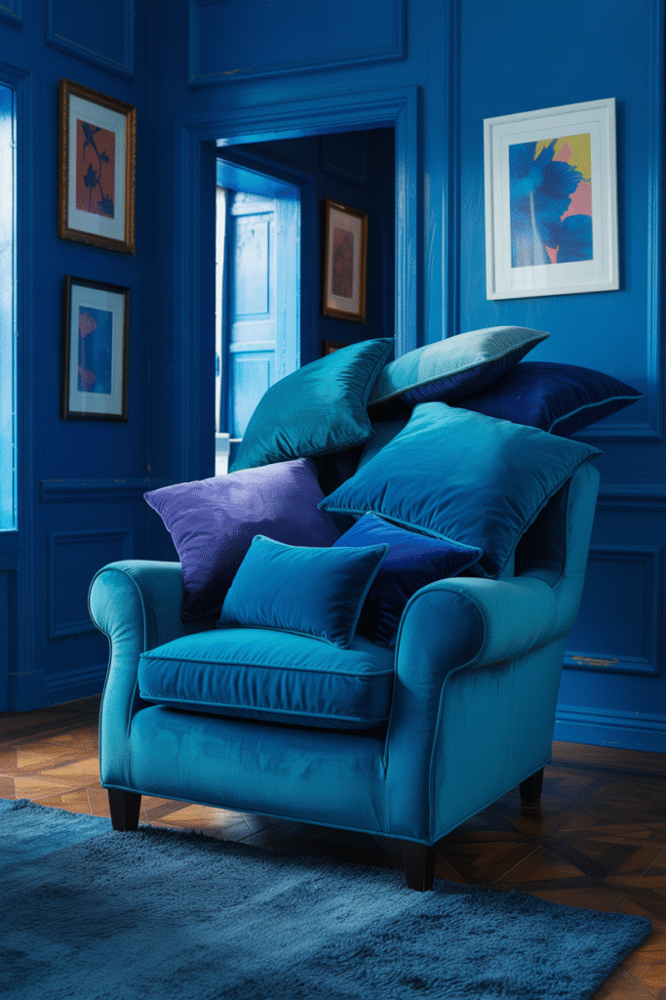
Keep It Fresh Through the Seasons
Swapping in warmer textiles and accents for fall and winter, then lighter ones for spring and summer, keeps a blue farmhouse room from feeling static year-round.
This is a low-cost way to keep the space feeling intentional rather than locked into one seasonal mood permanently.
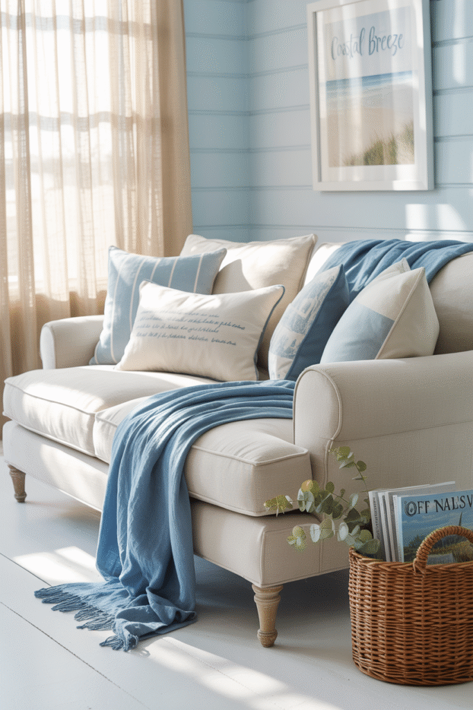
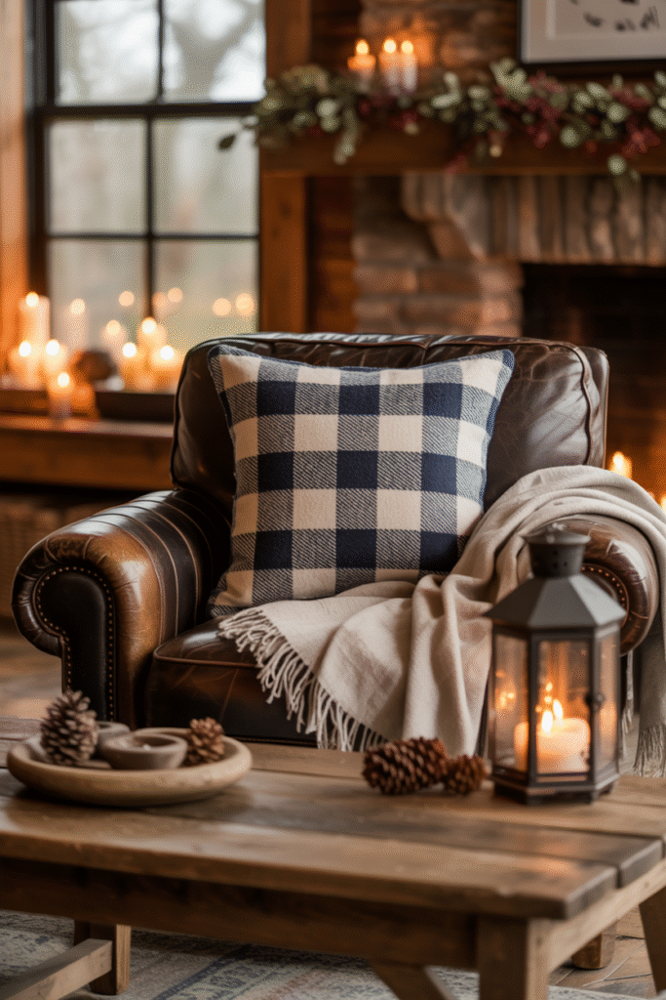
Make Built-Ins and Storage Work Hard
Built-in shelving or a painted cabinet in the same blue family as the walls creates a cohesive, considered look rather than a patchwork of separate color choices.
This also solves real storage needs in a living room, which matters more than purely decorative choices in a space that gets used daily.
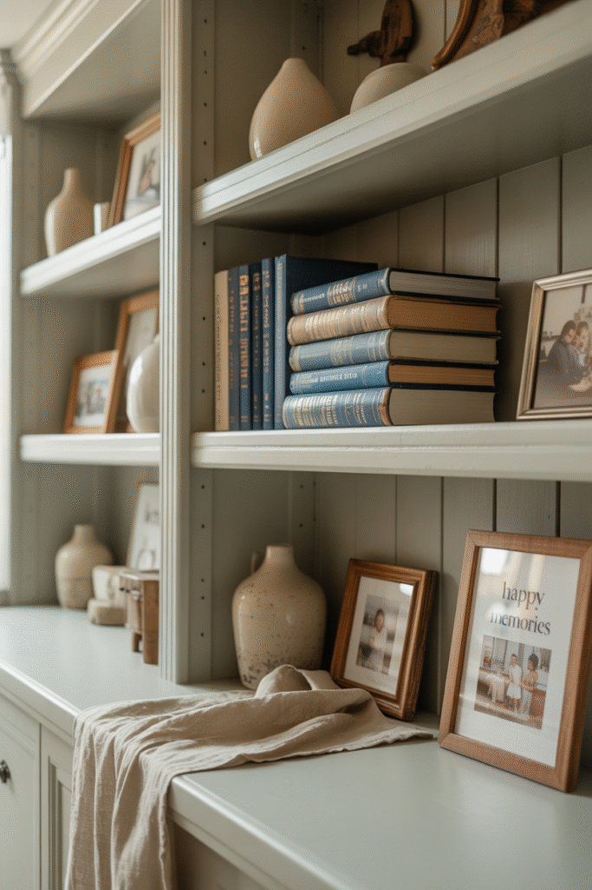
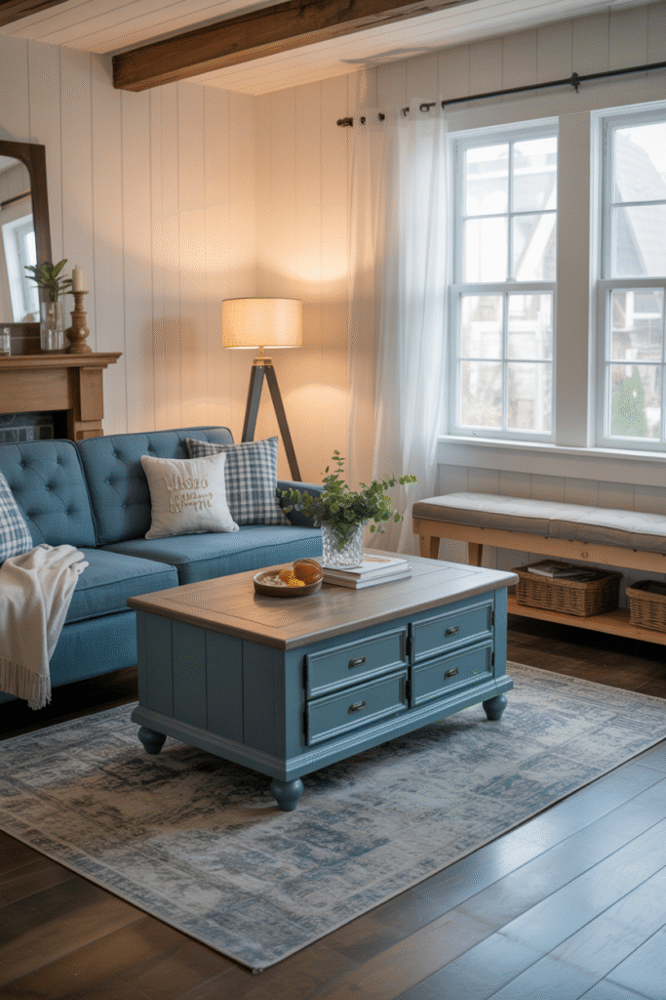
Let Lighting Set the Mood
Warm-toned bulbs matter more in a blue room than almost any other color, since cool lighting on top of a cool palette can tip the whole space toward feeling cold rather than calm.
A mix of overhead, lamp, and accent lighting keeps the blue from reading as flat under a single light source.
This is worth getting right before committing further to the palette, since lighting changes how every other blue element in the room actually reads.
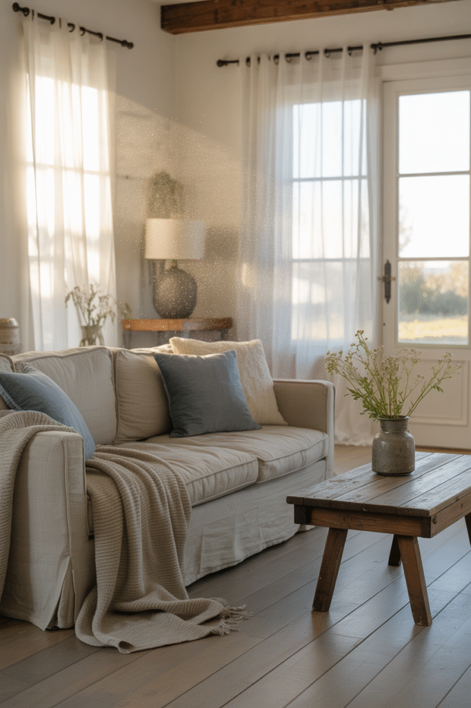
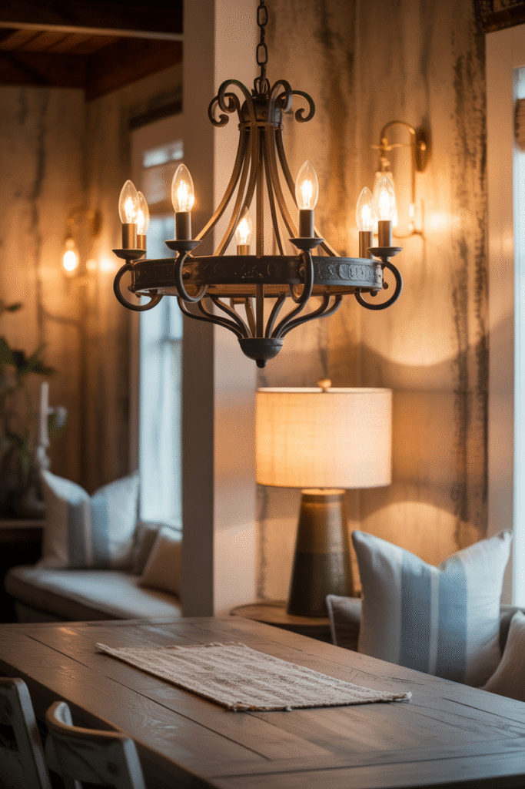
Bring Decor That Feels Like Home
Ceramic vases, woven baskets, and a few blue-and-white textiles bring the palette into the smaller details without requiring any furniture changes.
Mixing in warm neutrals alongside the blue accents keeps the room from feeling one-note or overly cool.
This is the easiest, lowest-cost layer to adjust seasonally as the palette gets dialed warmer or cooler.
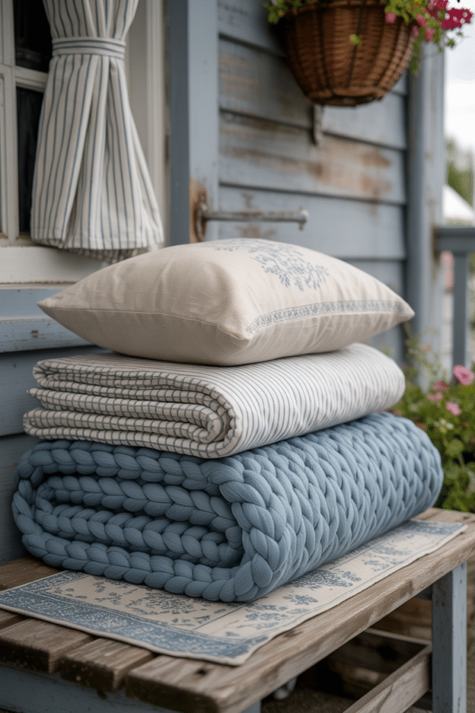
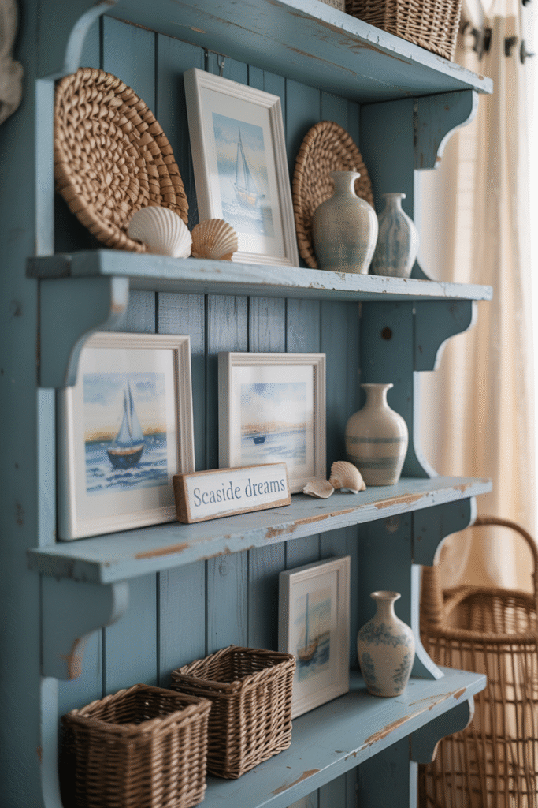
Consider Wall Treatments
Shiplap painted in a soft blue, or a single blue accent wall against otherwise white walls, both bring the color in at a larger scale without overwhelming the room.
This is one of the higher-commitment choices on this list, but also one of the most transformative for setting the room's overall mood.
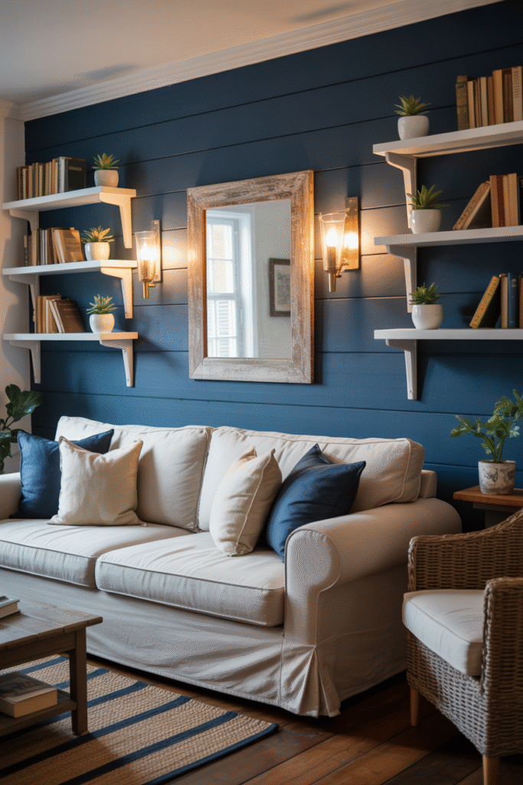
Choose Furniture With a Coastal Twist
A slipcovered sofa, a weathered wood coffee table, or a rattan accent chair bring in just enough coastal influence to complement the blue without losing the farmhouse foundation.
This works best as an accent rather than a full room overhaul. One or two coastal-leaning pieces alongside otherwise classic farmhouse furniture.
Natural materials throughout keep the room feeling grounded even as the palette shifts cooler than typical farmhouse.

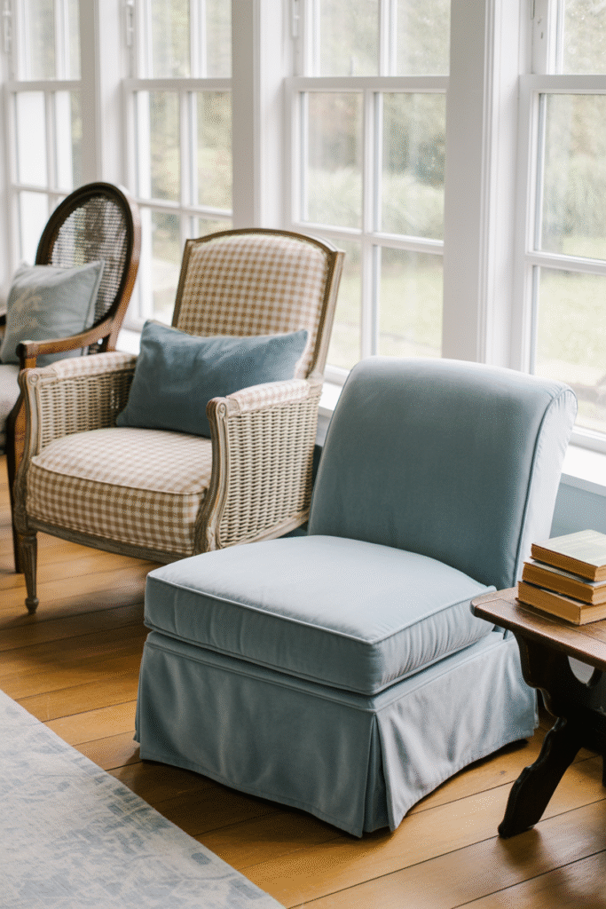
Find the Right Blue First
Not every blue works the same way in a farmhouse room. A soft, slightly muted blue reads as calm, while a bright or saturated blue can tip the whole room toward coastal instead of farmhouse.
A blue with a gray or green undertone tends to sit more naturally alongside farmhouse's warm wood tones than a pure, clean blue does.
Testing a sample in the room's actual light matters more here than with almost any other color choice, since blue shifts dramatically between morning and evening light.
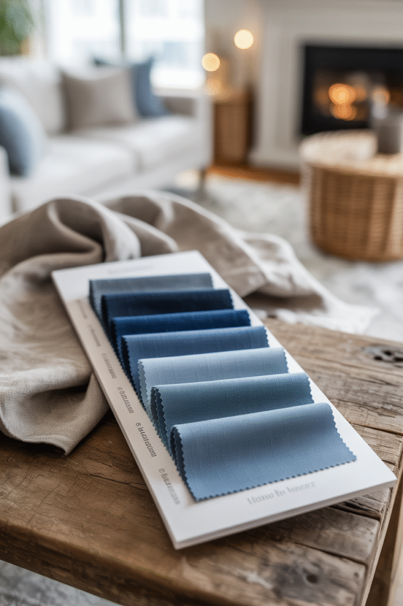
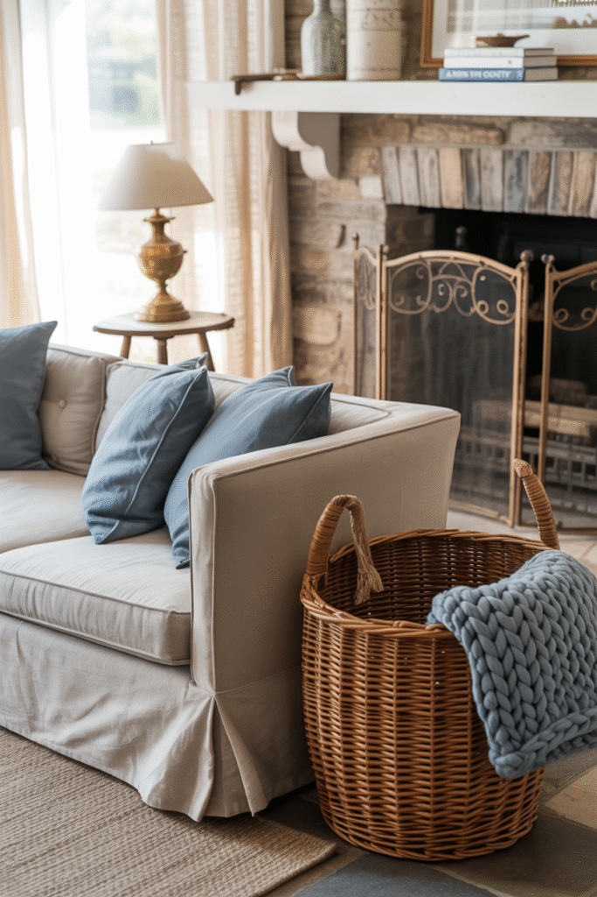
Your Serene Space Awaits
Blue and farmhouse work together when the blue stays muted, the materials stay warm, and the lighting stays soft.
Start with the palette and lighting, then layer in furniture, decor, and seasonal touches as the room comes together.
Done well, this combination produces one of the most genuinely restful living rooms in the farmhouse category.